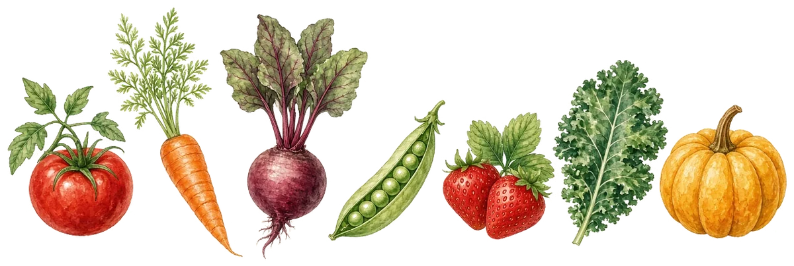
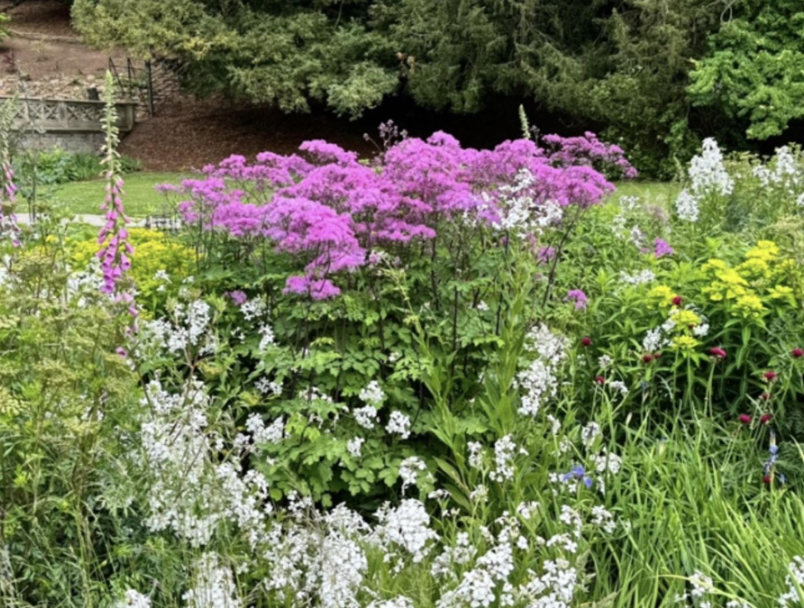

Allotments & Plots
Growing on Ruddington clay
Allotments & Plots
Advice for Hareham Gardens, Paradise Gardens and local clay soil growing.
Allotment tipsWe’re a friendly bunch of village gardeners who have been sharing tips and good company since 1934. Whether you grow on a windowsill, a patio or an allotment, you’ll be made very welcome. Come along to a meeting — or join us and grow with us!
Opens a separate weather window; your RGA page stays open. Your browser may use a tab.


Whether you have a windowsill, a patio, a garden or an allotment plot, the Ruddington Gardeners’ Association welcomes you.
Growing on Ruddington clay
Advice for Hareham Gardens, Paradise Gardens and local clay soil growing.
Allotment tipsMonthly speakers and socials
Monthly speakers, practical demonstrations and friendly social evenings.
See meetingsOutings through the year
Councils, plots and help
Parish and borough councils, allotments, library, RHS advice and nearby garden centres — all in one place.
Browse Local Links